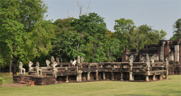

|  | สะพานนาคราชตั้งอยู่ตรงหน้าประตูซุ้มกำแพงศาสนสถานสร้างด้วยหินทรายเป็นสะพานรูปกากบาทขนาดกว้าง 4 เมตร ยาว 31.70 เมตร ยกพื้นสูงจากพื้นดินประมาณ 2.50 เมตร ด้านหน้าและด้านข้างลดชั้น ทั้งสามด้านมีบันไดขึ้น-ลง เชิงบันไดทำเป็นอัฒจันทร์รูปปีกกา ด้านหลังมีถนนเชื่อมเชื่อมต่อกับประตูซุ้มของกำแพงปราสาทด้านทิศใต้ราวสะพานโดยรอบทำเป็นลำตัวของนาคราช ชูคอแผ่พังพานเป็นนาค 7 เศียรมีรัศมีหันหน้าออกไปยังเชิงบันไดทั้ง 4 ทิศ เศียรนากเหล่านี้ มีรัศมีติดกันเป็นแผ่นสลักลายในแนวนอน อันเป็นลักษณะที่นิยมในศิลปะเขมรแบบนครวัดราวกลางพุทธศตวรรษที่ 17 ที่เชิงบันไดมีประติมากรรมรูปสิงห์สลักด้วยหินทรายตั้งประดับอยู่เสาและขอบสะพานสลักลายงดงาม (จรรยา มาณะวิท และระวิวรรณ บุญญศาสตร์พันธุ์, 2542: 26 ; กรมศิลปากร, 2552: 33) ทั้งนี้ สะพานนาคราช มีแต่เฉพาะหน้าประตูซุ้มด้านทิศใต้ซึ่งเป็นด้านหน้าเพียงด้านเดียว ซึ่งอาจสร้างขึ้นเพื่อให้เป็นสัญลักษณ์แสดงถึงทางเชื่อมต่อระหว่างโลกมนุษย์กับโลกสวรรค์ และการที่มีรูปสิงห์และนาคที่เป็นสัตว์ในจินตนาการที่เชื่อกันว่ามีอยู่นอกแดนมนุษย์ประดับบันไดและราวสะพานนั้น อาจจะไม่ใช่ทำขึ้นเพียงเพี่อความสวยงามเท่านั้น อาจต้องการสื่อความหมายในทำนองเดียวกันเพื่อให้เห็นว่าพ้นจากแดนโลกมนุษย์ และจากจุดนี้ไปจะเข้าสู่ดินแดนแห่งโลกสวรรค์ ตามคติความเชื่อที่สืบต่อกันมาทั้งศาสนาฮินดู และศาสนาพุทธ |